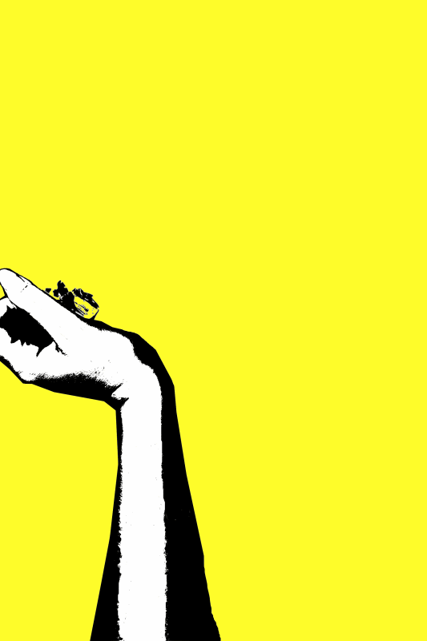
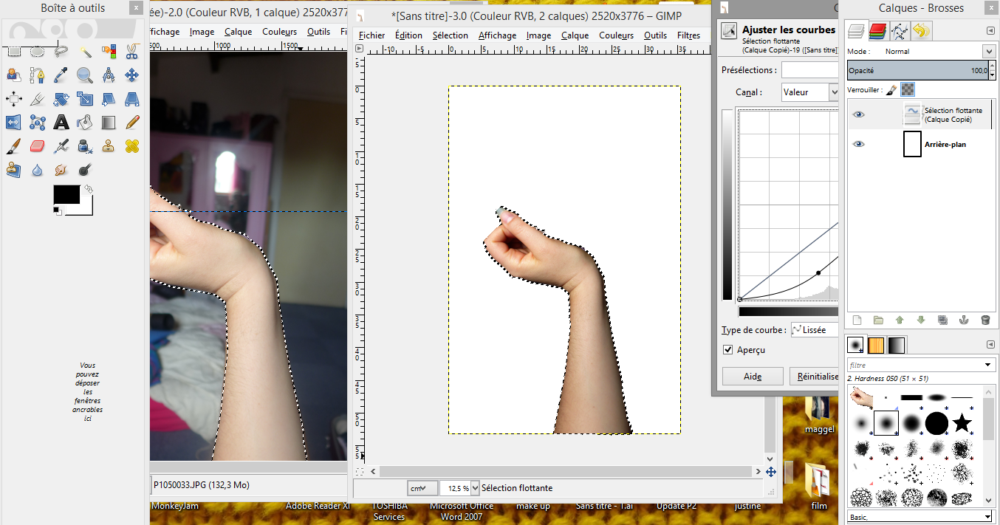
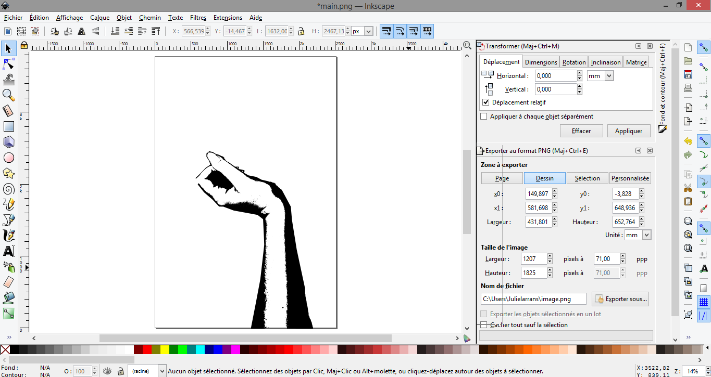
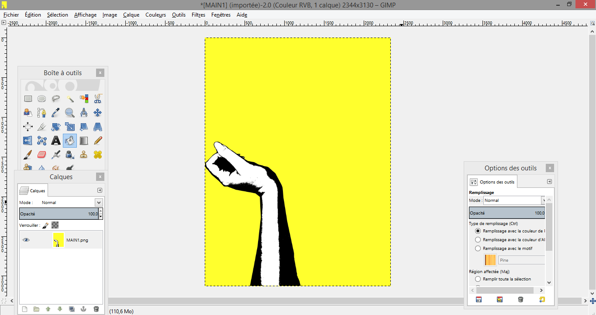

GIF MAIN
utiliser une série de photo avec Gimp, Inkscape, puis Photoscape pour créer un gif.
Ouvrir la première photo dans Gimp |
 |
Ouvrir l'image modifié dans inkscape pour vectoriser l'objet |
 |
Reouvrir l'image dans Gimp pour apporter des modification (fermer l'image, ajouter du blanc ou du noir) ou y apporter une couleur |  |
Ouvrir photoscape pour créerle gif |  |
Gif terminé !